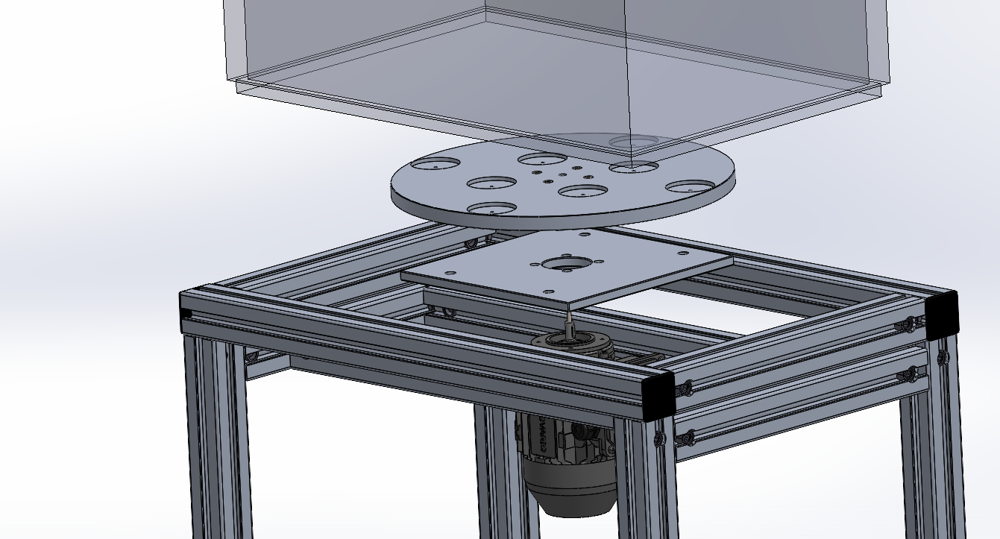
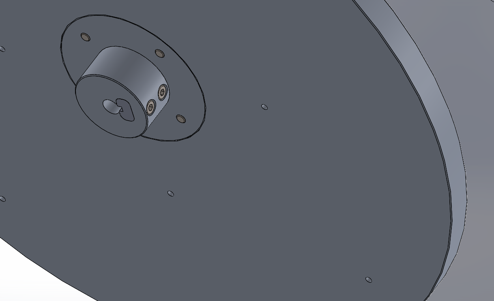

Dragos Patca
Autonomous Polishing Assembly
A comprehensive real-life project: designing and building an autonomous polishing machine with CNC-manufactured components.
Project Overview
The Autonomous Polishing Assembly is a real-life project that combines mechanical engineering, CNC manufacturing, and electrical control systems. This machine was designed in SolidWorks and then brought to life through precision CNC machining and manual assembly.
Mechanical Design
Structure: The machine is built on a table-like frame constructed from Bosch profiles, providing a sturdy and modular foundation. A universal plastic box receptacle sits on top, designed to hold the materials being polished.
Support System: The machine features a support structure made from 4 profiles and an aluminum plate. The motor is securely mounted on this aluminum plate, which serves as the backbone of the assembly.
Motor Mounting: Due to the absence of specialized tooling for creating motor mounting holes, a custom two-piece bracket was designed and manufactured on the CNC. This bracket holds the Motovario motor in place with precision alignment.
Polishing Mechanism
Magnetic Disc System: A custom disc with the same diameter as the plastic box sits on top. This disc is mounted with 8 strategically placed magnets that rotate with the motor, creating a dynamic polishing action.
Steel Filings: The plastic box contains steel filings that are agitated by the rotating magnetic disc, effectively polishing the workpiece inside.
Non-Magnetic Workpieces: This machine is specifically designed to polish non-magnetic pieces. The magnetic system ensures safe operation and effective material distribution during the polishing process.
Manufacturing Process
CNC Manufacturing: All custom parts—brackets, disc, and specialized components—were manufactured on a CNC machine. This ensures precision tolerances and repeatability.
Real-Life Assembly: After designing in SolidWorks with 3D models of the Motovario motor and Bosch profiles, all components were assembled manually to create the final working machine.
Electrical Control System
Control Panel: A custom electrical panel was designed and integrated into the system with the following features:
- Dual On/Off Buttons: Two latching buttons that activate and deactivate each other—when one is pressed, the other is released automatically, preventing simultaneous operation.
- Emergency Stop Button: A rotary emergency stop button for quick shutdown in case of hazards or malfunction.
- Safety Interlocks: The electrical design ensures safe operation with proper control of motor function.
Design Tools Used
- SolidWorks CAD for 3D design and modeling
- CNC machining for precision component manufacturing
- Custom electrical panel design and implementation
- Bosch profile system for structural framework
- Motovario motor integration
Current Implementation
Active Use: This Autonomous Polishing Assembly is currently in active use at the company for which it was manufactured. The machine has proven its reliability and effectiveness in production environments, continuously polishing non-magnetic components with precision and consistency.
Project Gallery
Project images showcasing the assembly process and final result:


3D Component Files
STEP files for the custom CNC components. Click to download or view in 3D:
- prindere.STEP - Motor Bracket Part 1
- prindere_part2.STEP - Motor Bracket Part 2
- Tabla_suport_motor.STEP - Motor Support Plate
CAD Drawings & Technical Details
2D technical drawing and detailed CAD views of the assembly, including component breakdown and design highlights:

Detailed CAD view of key assembly components

Close-up highlighting structural and mounting details

2D technical drawing with integrated Bill of Materials (BOM)
Design Evolution
From SolidWorks CAD to manufacturing and real-world assembly, this project demonstrates a complete engineering lifecycle. The design process involved precision modeling of the Motovario motor, Bosch profiles, and custom components, followed by CNC manufacturing and hands-on assembly.
Project Significance
This project demonstrates a complete engineering workflow: from conceptualization in CAD, through CNC manufacturing of custom parts, to real-world assembly and integration of both mechanical and electrical systems. It showcases practical problem-solving, such as creating a custom motor bracket when standard mounting solutions weren't available, and the implementation of safety features in a functional industrial machine.